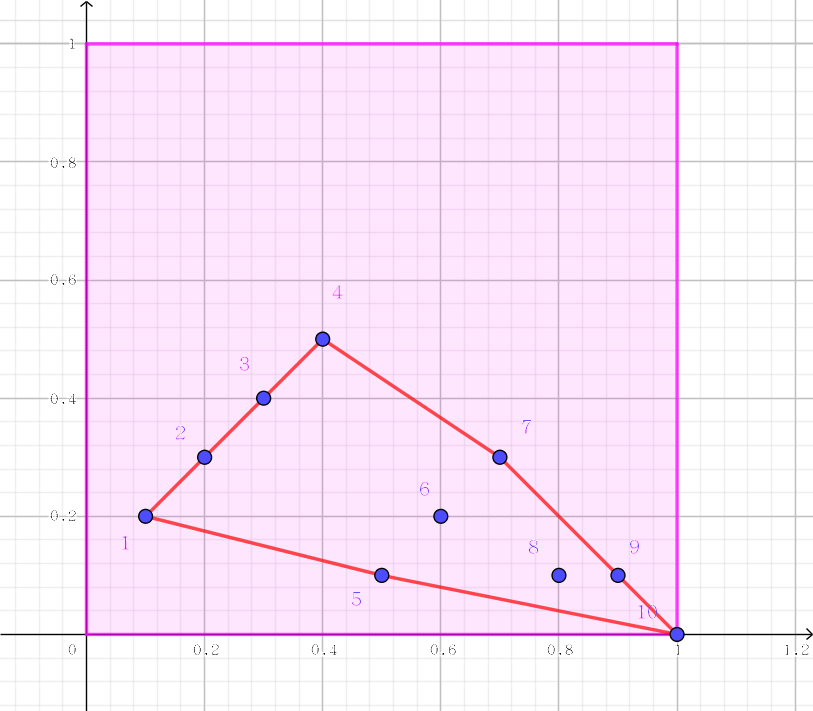

某公司加工一种由铁、铝、锡组成的合金。
他们的工作很简单，首先进口一些铁铝锡合金原材料，不同种类的原材料中铁铝锡的比重不同。然后，将每种原材料取出一定量，经过融解、混合，得到新的合金，新的合金的铁铝锡比重为用户所需要的比重。
现在，用户给出了 $n$ 种他们需要的合金，以及每种合金中铁铝锡的比重。公司希望能够订购最少种类的原材料，并且使用这些原材料可以加工出用户需要的所有种类的合金。
第一行包含两个整数 $m, n$ ($m, n \leq 500$)，分别表示原材料种数和用户需要的合金种数。
第 $2$ 到 $m+1$ 行，每行包含三个实数 $a, b, c$ ($a, b, c \geq 0 \wedge a + b + c = 1$)，分别表示铁铝锡在一种原材料中所占的比重。
接下来的 $n$ 行，每行包含三个实数 $a, b, c$ ($a, b, c \geq 0 \wedge a + b + c = 1$)，分别表示铁铝锡在一种用户需要的合金中所占的比重。
输出一行一个整数，表示最少需要的原材料种数。若无解，则输出 –1。
(scx：都说了 $a + b + c = 1$ 那为什么还要给三个，这不是冗余数据吗，数据应该不会有错吧……)
好了，可以看出，两种合金能熔合成的合金就是它们的非负线性组合。即，我们把每个合金看成直角坐标系中的一个点 $(x, y)$，其中 $x, y$ 为其中两种金属的比重，则两个合金能熔合成的合金所对应的点，就在这两个合金所对应的点构成的线段上。
三个合金所能熔合的，则是三个点构成的三角形，那四个合金呢？答案是这四个点构成的凸包。
于是原题就转化为这样一个问题：给定 $m$ 个点，要求选一些点，满足它们构成的凸包包含所有所需的 $n$ 个点，如下图所示 (样例，选择了铁和铝，共需 $5$ 个点)。
可以发现，如果一条线段在凸包上，则所有所需的点均在该条线段的一侧。
于是，可以预处理出对于任意两个点，所有不在两点所在直线上的所需的点是否在同一侧。
考虑有向线段 $\vec{p_i p_j}$，并记该方向为 "上"。那么如果 "左边" 没有点，那么它在凸包上应该是顺时针走的，那么连有向边 $(i, j)$ (如上图中的 $(4, 7)$)，如果 "右边" 没有点，那么它在凸包上应该是逆时针走的，那么它的反边就是顺时针了，因此连有向边 $(j, i)$ (如上图中的 $(1, 5)$)。
那么，如果最后存在凸包的话 (答案 $\geq 3$)，那么凸包边界上的点按顺时针排列后，在图中应该构成一个环，如上图中的 $1 \to 3 \to 4 \to 7 \to 10 \to 5 \to 1$。
于是，我们只需要求一下转化后的图的最小环即可。由于 $m \leq 500$，因此直接上 Floyd 即可。
如果最后发现有环 $d_{i, i} < + \infty$ (或 $\leq m$)，那么最小的环即是答案。否则，说明所有点的凸包都不能包含所有所需的 $n$ 个点，则说明无解。
当然，还有答案为 $1$ 或 $2$ 的情况，答案是 $1$ 说明所有 $m + n$ 个点重合，答案是 $2$ 说明所有 $m + n$ 个点共线且两端点是原料，极易特判。
#include <bits/stdc++.h>
#define N 510
#define INF 0x3f3f3f3f
using namespace std;
const double eps = 1e-8;
struct vec2{
double x, y;
vec2 (double x0 = 0.0, double y0 = 0.0): x(x0), y(y0) {}
inline vec2 operator + (const vec2 &B) const {return vec2(x + B.x, y + B.y);}
inline vec2 operator - (const vec2 &B) const {return vec2(x - B.x, y - B.y);}
inline double operator * (const vec2 &B) const {return x * B.x + y * B.y;}
inline double operator ^ (const vec2 &B) const {return x * B.y - y * B.x;}
inline double norm2() const {return *this * *this;}
};
int A, B, i, j, k;
vec2 a[N], b[N];
double w;
int clw, aclw, out; // clockwise, anticlockwise
int ans, f[N][N]; // f[i][j] = 1 if all point is on the right-hand-side of i->j
bool coincide(){
int i;
for(i = 2; i <= A; ++i) if((a[i] - a[1]).norm2() > eps * eps) return false;
for(i = 1; i <= B; ++i) if((b[i] - a[1]).norm2() > eps * eps) return false;
return putchar(49), putchar(10), true;
}
inline bool check(int u, int v, int k) {return (b[k] - a[u]) * (b[k] - a[v]) < eps;}
inline void down(int &x, const int y) {x > y ? x = y : 0;}
void Floyd(){
int i, j, k;
for(k = 1; k <= A; ++k)
for(i = 1; i <= A; ++i)
for(j = 1; j <= A; ++j)
down(f[i][j], f[i][k] + f[k][j]);
}
int main(){
scanf("%d%d", &A, &B);
for(i = 1; i <= A; ++i) scanf("%lf%lf%*lf", &a[i].x, &a[i].y);
for(i = 1; i <= B; ++i) scanf("%lf%lf%*lf", &b[i].x, &b[i].y);
if(coincide()) return 0;
memset(f, 63, sizeof f);
for(i = 1; i < A; ++i)
for(j = i + 1; j <= A; ++j){
clw = aclw = out = 0;
for(k = 1; k <= B; ++k){
w = b[k] - a[i] ^ a[j] - a[i];
if(w > eps) clw = 1;
else if(w < -eps) aclw = 1;
else if(!check(i, j, k)) {out = 1; break;}
if(clw && aclw) break;
}
if(out) continue;
aclw ? 0 : f[i][j] = 1; // 0 | x
clw ? 0 : f[j][i] = 1; // x | 0
}
Floyd(); ans = INF;
for(i = 1; i <= A; ++i) down(ans, f[i][i]);
printf("%d\n", ans > A ? -1 : ans);
return 0;
}
坑1：不要忘记特判答案是 $1$ 或 $2$ 的情况 (貌似答案是 $2$ 不用特判，因为有环 $a \to b \to a$)。
坑2：在加上一条边 $(i, j)$ 的时候，保证直线 $p_i, p_j$ 上的所有所需的点均在线段 $p_i p_j$ 内部，否则这条边不可能是答案，会导致答案偏小。